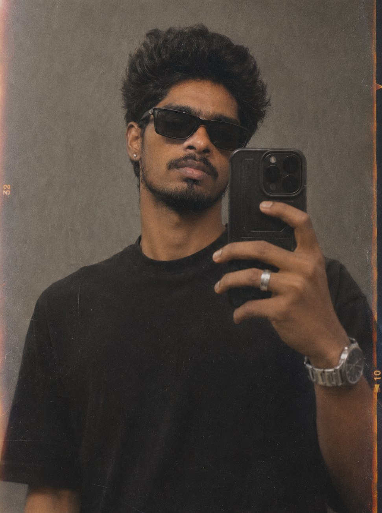

VFX ARTIST / LEVEL DESIGNER
Worlds that
stay with you.
I’m Iyappan — I shape real-time environments, creatures and cinematic moments into worlds with a point of view.

BUILT FOR REAL-TIME
FINISHED LIKE CINEMA
MADE TO BE EXPLORED
THE PERSON BEHIND THE WORLDS
Art, atmosphere
and intent.
One eye on the story.
One foot in the engine.
TOOLS ARE ONLY THE START
Built across
the pipeline.
From terrain and topology to lighting, lookdev and the final composite, I move between the technical and the cinematic.
A FEW WORLDS, SHOTS & STUDIES
Made to be felt.
Environment art, creature work and cinematic craft — each project a different way into the world.
YOUTUBE · VFX SHOWREEL
The work,
in motion.
Watch the VFX showreel and selected video work without leaving the portfolio.
Open playlist on YouTubeLocal file preview
Open this portfolio with start-portfolio.cmd to play the video here.
A PRACTICE IN PROGRESS
Learning by
making.
Studio production, teaching and formal game-art training have all shaped how I approach a frame and a playable space.
FROM BLOCKOUT TO FINAL PIXEL
Good work,
good together.
Flexible support for teams who need a thoughtful artist with both a visual eye and an understanding of production.
THE NEXT WORLD STARTS SOMEWHERE
Have a good
story to tell?
For collaborations, studio work and creative conversations, I’d love to hear what you’re making.
Get in touch